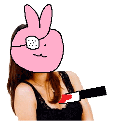

|  | If you're not remembered, then you never existed. What isn't remembered never happened. You only have substance in the memories of others. There is no reason to stay in the real world any longer. In the real world, it doesn't matter if you're there or not. When you realize that, you will no longer be afraid of losing your body. Abandon your flesh. |
| [about] | [members] | [contact] |